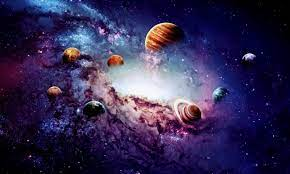
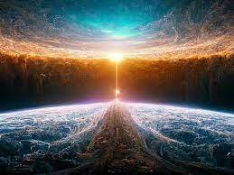

Desde tiempos inmemoriales hemos tratado de conocer cómo se formó el universo. La respuesta más común se basa en la teoría del Big Bang, pero no es la única.
La teoría más conocida sobre el origen del universo se centra en un cataclismo cósmico sin igual en la historia: el Big Bang. Esta teoría surgió de la observación del alejamiento a gran velocidad de otras galaxias respecto a la nuestra en todas direcciones, como si hubieran sido repelidas por una antigua fuerza explosiva. Con el exitoso lanzamiento y despliegue del telescopio espacial James Webb la comunidad científica pretenden obtener más datos sobre el origen del universo. Con esta nueva herramienta en el espacio, los astrónomos pretenden buscar en el universo, tanto en el espacio como en el tiempo, cosas nunca vistas antes. Y en 2023, estas observaciones ya han dado sus frutos y permitido a los científicos saber más sobre el pasado del universo.
¿Habia algo antes del big bang?
Antes del Big Bang, según los científicos, la inmensidad del universo observable, incluida toda su materia y radiación, estaba comprimida en una masa densa y caliente a tan solo unos pocos milímetros de distancia. Este estado casi incomprensible se especula que existió tan sólo una fracción del primer segundo de tiempo.
POSTURAS
Los defensores del Big Bang sugieren que hace unos 10 000 o 20 000 millones de años, una onda expansiva masiva permitió que toda la energía y materia conocidas del universo (incluso el espacio y el tiempo) surgieran a partir de algún tipo de energía desconocido. La teoría mantiene que, en un instante (una trillonésima parte de un segundo) tras el Big Bang, el universo se expandió con una velocidad incomprensible desde su origen del tamaño de un guijarro a un alcance astronómico. La expansión aparentemente ha continuado, pero mucho más despacio, durante los siguientes miles de millones de años.
¿Tendrá un fin el universo?
En la actualidad, existen una serie de teorías que tras una hipótesis explican cómo creen que será el final del universo. Para comenzar, podemos hablar del modelo del Big Freeze, el cual dictamina que la continua expansión del universo causara (dentro de un billón de años) la extinción de todas las estrellas, dando como resultado un universo frío y oscuro. Podemos mencionar también de la teoría del Big Rip (o el gran desgarro) que propone que cuanto más se expande el universo más energía oscura es generada, llegando a un momento en el tiempo en que la energía oscura vencerá a la gravedad rompiendo el equilibrio que está presente entre ambas fuerzas y generando la disgregación de cualquier tipo de materia. Por último, se habla del fenómeno de Big Crush que defiende la contracción del universo en un único punto luego de su máxima expansión, dando origen a un nuevo Big Bang.
¿COMO SE PRODUJO EL BIG BANG?
Según la teoría del Big Bang, hace unos 13.800 millones de años, el universo, concentrado en un ínfimo y a su vez infinitamente pequeño punto que albergaba toda la materia, explotó para después enfriarse a medida que se expandía.

El Big Bang tuvo lugar en todo el universo. Esto es así porque el Big Bang realmente no fue una explosión que tuviera lugar en un universo vacío excepto por un diminuto punto central. El Big Bang fue una explosión del propio universo.